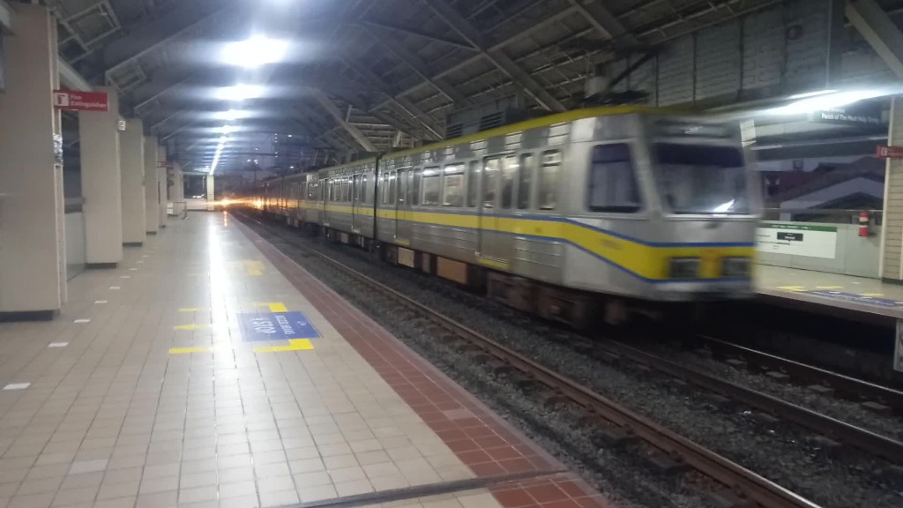

LRT-1 rides
Libertad to EDSA
Justin decided to go to LRT-1 because the jeepneys are too long to wait. As his first time to ride after 4 years, he so happy because it's too long not seen the trains and stations. His first ride was on November 17, 2022.
And he decided to take a video when the train is coming. At first he so scared for taking video because the guards can catch me. After I asked rail enthusiasts of the following days, they said that taking pictures and videos of LRT-1 is allowed because LRT-1 is the most unrestricted train line in terms of taking pictures and videos.
And he decided to take a video when the train is coming. At first he so scared for taking video because the guards can catch me. After I asked rail enthusiasts of the following days, they said that taking pictures and videos of LRT-1 is allowed because LRT-1 is the most unrestricted train line in terms of taking pictures and videos.

2nd gen train at Libertad station on December 14, 2022.
Video 
His destination is mostly at EDSA because his home was near at EDSA. In every school days, he rode mostly from Libertad to EDSA. Until December 15, 2023, which is the last ride from Libertad to EDSA.
For more videos of LRT-1 rides from Libertad to EDSA, please click HERE
.
Baclaran to Libertad

Inside of Baclaran station on December 15, 2022.

3rd gen train at Baclaran station on December 15, 2022.
Video
Justin tried to go to Baclaran station from EDSA by himself to ride LRT-1 to Libertad. After years not entering that station, it was a large station ever seen.
He started to rode the train from Baclaran to Libertad on December 15, 2022 after years.
For more videos of LRT-1 rides from Baclaran to Libertad, please click HERE
.
EDSA to Libertad
Justin ride LRT-1 from EDSA to Libertad after his trainspotting to upload his videos at Libertad by connecting to high-speed free WiFi. This kind of ride was started on February 1, 2023 and it was the first time to ride in this kind of route.
Rear cabin view ride on February 1, 2023.
Video
For more videos of LRT-1 rides from EDSA to Libertad, please click HERE
.
Libertad to Baclaran
On February 1, 2023, he rode LRT-1 from Libertad and his destination was not EDSA, it's Baclaran to make his ride until the end of LRT-1 line.Unfortunately, starting February 20, his ride were ended at EDSA station due to end of class time were adjusted from 5:30 PM to 7:00 PM cause of the end of daylight saving time in the city. On October 25, 2023, he able to ride again from Libertad to Baclaran.
Justin rode on 3rd gen train going to Baclaran on February 1, 2023.
Video
Crowded people are lined up to get out from the station since the track is switched on the other side on February 13, 2023.
Video
For more videos of LRT-1 rides from Libertad to Baclaran, please click HERE
.
Libertad to Baclaran to EDSA
On September 6, 2023, Justin rode the 4th generation train to EDSA but the train is running slow. He know that the train is about to track switching before approaching Baclaran station. So he decided to go to Baclaran station the the train switched the tracks to northbound side. It was a chance to go back to EDSA.
Many southbound passengers are leaving the train except Justin which he need to go back to EDSA station without leaving the train. So he made the train ride from Libertad to Baclaran to EDSA.
Many southbound passengers are leaving the train except Justin which he need to go back to EDSA station without leaving the train. So he made the train ride from Libertad to Baclaran to EDSA.
4th gen train departing EDSA station northbound on September 6, 2023
Watch the video HERE
.
EDSA to Carriedo
When Justin go to University of the East, he rode the train from EDSA to Carriedo on November 5 until December 10, 2023 of every Sunday. This is the very first time going to Carriedo station and it was 5 years not riding the train after Libertad.
View of Pasig River from onboarding 4th gen train on November 5, 2023. Video
For more videos of LRT-1 rides from EDSA to Carriedo, please click HERE
.
Doroteo Jose to EDSA
On November 26, 2023, Justin rode the train from Doroteo Jose to EDSA and this is the very first time ever.Libertad to Carriedo
Same reason as the EDSA to Carriedo ride but now it's started from Libertad on December 17, 2023 since Justin moved to new address.Doroteo Jose to Libertad
After Justin's class, he rode the train going back to home, but he decided that his station destination is Libertad to buy and eat breakfast. Starting December 17, 2023, Libertad is now the station destination to go home as he moved to new address.
If you want to view and watch all LRT-1 rides by Justin, please click
here .
Also, you can watch his train rides by train generation:
1st gen train rides
2nd gen train rides
3rd gen train rides
4th gen train rides
.
Also, you can watch his train rides by train generation:
1st gen train rides
2nd gen train rides
3rd gen train rides
4th gen train rides